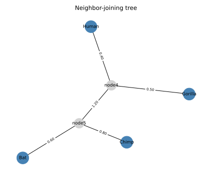

Phylogenetic Tree Reconstruction
The Problem
- Species that share a common ancestor tend to have similar DNA or protein sequences.
- A phylogenetic tree shows how a set of taxa (species, genes, or individuals) are related by common descent.
- The leaves of the tree are the observed taxa; internal nodes represent hypothetical ancestors.
- An unrooted binary tree on $N$ leaves has exactly $2N - 3$ edges.
- Given only pairwise sequence distances, we want to infer the tree topology and branch lengths.
An unrooted binary tree on 8 leaves has how many edges?
- 8
- Wrong: 8 is the number of leaves, not edges.
- 11
- Wrong: that is $2 \times 8 - 5$; the correct formula is $2N - 3$.
- 13
- Correct: an unrooted binary tree on N leaves has $2N - 3$ edges; $2 \times 8 - 3 = 13$.
- 15
- Wrong: 15 would require $2N - 3 = 15$, i.e. N = 9 leaves.
Distance Matrices
- A distance matrix $D$ stores the evolutionary distance between every pair of taxa.
- Distances are estimated from aligned sequences: the fraction of positions that differ, corrected for multiple substitutions.
- An ideal distance matrix is additive: the distance between any two leaves equals the sum of branch lengths on the path between them.
TAXA = ["Bat", "Chimp", "Human", "Gorilla"]
# True branch lengths from the reference tree:
# ((Bat:0.6, Chimp:0.8):1.2, (Human:0.4, Gorilla:0.5))
# Pairwise distances are sums of branches on the path between each pair.
_BRANCH = {
("Bat", "Chimp"): 0.6 + 0.8, # 1.4
("Bat", "Human"): 0.6 + 1.2 + 0.4, # 2.2
("Bat", "Gorilla"): 0.6 + 1.2 + 0.5, # 2.3
("Chimp", "Human"): 0.8 + 1.2 + 0.4, # 2.4
("Chimp", "Gorilla"): 0.8 + 1.2 + 0.5, # 2.5
("Human", "Gorilla"): 0.4 + 0.5, # 0.9
}
The six pairwise distances for our four-taxon example:
| Pair | Distance |
|---|---|
| Bat, Chimp | 1.4 |
| Human, Gorilla | 0.9 |
| Bat, Human | 2.2 |
| Bat, Gorilla | 2.3 |
| Chimp, Human | 2.4 |
| Chimp, Gorilla | 2.5 |
def make_distance_matrix(noise_scale=0.0, seed=SEED):
"""Return (names, D) where D is the symmetric pairwise distance matrix.
When noise_scale=0.0 (default) the distances are exact tree-additive values.
A non-zero noise_scale adds symmetric Gaussian noise so that the distances
no longer satisfy the four-point condition exactly, simulating real data.
"""
n = len(TAXA)
D = np.zeros((n, n))
for i, a in enumerate(TAXA):
for j, b in enumerate(TAXA):
if i < j:
key = (a, b) if (a, b) in _BRANCH else (b, a)
D[i, j] = D[j, i] = _BRANCH[key]
if noise_scale > 0.0:
rng = np.random.default_rng(seed)
noise = rng.normal(0, noise_scale, (n, n))
noise = (noise + noise.T) / 2 # keep symmetric
np.fill_diagonal(noise, 0)
D = np.maximum(D + noise, 0) # distances must be non-negative
return list(TAXA), D
The Neighbor-Joining Algorithm
- Neighbor-joining (Saitou and Nei, 1987) reconstructs a tree from a distance matrix in $O(N^3)$ time.
- The key insight is that the smallest raw distance does not always identify nearest neighbors: long branches can make distant taxa look close.
- The Q-matrix correction removes the effect of varying average distances:
$$Q(i,j) = (n-2)\,D(i,j) - \sum_k D(i,k) - \sum_k D(j,k)$$
- The pair $(i, j)$ with the smallest $Q(i,j)$ are joined into a new internal node $u$.
- Branch lengths from $u$ to $i$ and $j$ are:
$$\ell_i = \tfrac{1}{2}D(i,j) + \frac{\sum_k D(i,k) - \sum_k D(j,k)}{2(n-2)}$$
$$\ell_j = D(i,j) - \ell_i$$
- The distance from $u$ to every remaining taxon $k$ is:
$$D(u,k) = \tfrac{1}{2}\bigl[D(i,k) + D(j,k) - D(i,j)\bigr]$$
- Replace $i$ and $j$ with $u$ in the matrix and repeat until only two nodes remain.
- Join the final two nodes with a single edge.
def neighbor_joining(names, D):
"""Run the neighbor-joining algorithm and return a list of (node_a, node_b, length) edges.
`names` is a list of taxon (or internal node) labels.
`D` is a symmetric distance matrix with zero diagonal.
Returns a list of (node_a, node_b, branch_length) triples covering all 2N-3 edges
of the unrooted binary tree.
"""
names = list(names)
D = D.copy().astype(float)
edges = []
node_counter = len(names) # index for new internal nodes
while len(names) > 2:
n = len(names)
# Q-matrix: Q[i,j] = (n-2)*D[i,j] - sum_k D[i,k] - sum_k D[j,k]
row_sums = D.sum(axis=1)
Q = (n - 2) * D - row_sums[:, None] - row_sums[None, :]
np.fill_diagonal(Q, np.inf) # exclude diagonal from search
# Find the pair (i, j) with the smallest Q value.
idx = np.argmin(Q)
i, j = divmod(int(idx), n)
if i > j:
i, j = j, i
# Branch lengths from the new internal node u to i and j.
d_ij = D[i, j]
li = 0.5 * d_ij + (row_sums[i] - row_sums[j]) / (2 * (n - 2))
lj = d_ij - li
u_name = f"node{node_counter}"
node_counter += 1
edges.append((u_name, names[i], li))
edges.append((u_name, names[j], lj))
# Distance from new node u to each remaining taxon k.
new_row = np.array([0.5 * (D[i, k] + D[j, k] - d_ij) for k in range(n)])
# Build reduced matrix: remove rows/cols i and j, append u.
keep = [k for k in range(n) if k != i and k != j]
D_new = D[np.ix_(keep, keep)]
extra = new_row[keep]
size = len(keep) + 1
D2 = np.zeros((size, size))
D2[: len(keep), : len(keep)] = D_new
D2[: len(keep), -1] = extra
D2[-1, : len(keep)] = extra
D = D2
names = [names[k] for k in keep] + [u_name]
# Final two nodes: one edge between them.
edges.append((names[0], names[1], D[0, 1]))
return edges
Why does neighbor-joining compute a Q-matrix instead of simply joining the pair with the smallest raw distance?
- A long branch to a distant taxon makes it appear close to many others; the Q-matrix corrects for this bias
- Correct: the Q-matrix subtracts row sums to remove the effect of unequal average distances, revealing true nearest neighbours.
- The Q-matrix is faster to compute than scanning raw distances
- Wrong: computing Q requires the same $O(N^2)$ work as scanning the raw matrix.
- Raw distances are not symmetric, but Q-matrix entries are
- Wrong: a valid distance matrix is already symmetric by definition.
- The Q-matrix avoids the need to compute branch lengths separately
- Wrong: branch lengths are computed from the distance matrix after the pair is identified, not from Q itself.
Put these steps for one iteration of neighbor-joining in the correct order.
- Compute the Q-matrix from the current distance matrix
- Find the pair (i, j) with the minimum Q value
- Compute branch lengths from the new internal node to i and j
- Compute distances from the new node to all remaining taxa
- Remove i and j from the matrix, add the new node, and repeat
A Worked Example
Starting with $n = 4$ taxa and the distances above, the Q-matrix for the first iteration is:
| Bat | Chimp | Human | Gorilla | |
|---|---|---|---|---|
| Bat | — | −5.8 | −4.6 | −4.8 |
| Chimp | — | −4.6 | −4.6 | |
| Human | — | −7.0 | ||
| Gorilla | — |
The minimum is $Q(\text{Human}, \text{Gorilla}) = -7.0$, so Human and Gorilla are joined first as node4.
Branch lengths: $\ell_\text{Human} = 0.4$, $\ell_\text{Gorilla} = 0.5$.
After replacing Human and Gorilla with node4, the matrix shrinks to $3 \times 3$. The next minimum joins Bat and Chimp as node5 ($\ell_\text{Bat} = 0.6$, $\ell_\text{Chimp} = 0.8$). The final edge node4--node5 has length 1.2.
In the first NJ iteration Human and Gorilla are joined. $D(\text{Human}, \text{Gorilla}) = 0.9$. The row sums are $\sum_k D(\text{Human}, k) = 5.5$ and $\sum_k D(\text{Gorilla}, k) = 5.7$. Using $\ell_i = \tfrac{1}{2}D(i,j) + \frac{\sum_k D(i,k) - \sum_k D(j,k)}{2(n-2)}$ with $n = 4$, what is $\ell_\text{Human}$? Give your answer to two decimal places.
Displaying the Tree
def draw_tree(edges, taxa, filename):
"""Save an unrooted tree diagram to `filename`.
Leaf nodes (members of `taxa`) are drawn in blue; internal nodes in grey.
Edge labels show branch lengths rounded to two decimal places.
"""
G = nx.Graph()
for a, b, length in edges:
G.add_edge(a, b, weight=round(length, 4))
pos = nx.spring_layout(G, seed=7)
leaf_nodes = [n for n in G.nodes() if n in taxa]
internal_nodes = [n for n in G.nodes() if n not in taxa]
fig, ax = plt.subplots(figsize=(6, 5))
nx.draw_networkx_nodes(
G, pos, nodelist=leaf_nodes, node_color="steelblue", node_size=600, ax=ax
)
nx.draw_networkx_nodes(
G, pos, nodelist=internal_nodes, node_color="lightgrey", node_size=400, ax=ax
)
nx.draw_networkx_labels(G, pos, ax=ax, font_size=9)
nx.draw_networkx_edges(G, pos, ax=ax)
edge_labels = {(a, b): f"{d:.2f}" for a, b, d in edges}
nx.draw_networkx_edge_labels(G, pos, edge_labels=edge_labels, font_size=7, ax=ax)
ax.set_title("Neighbor-joining tree")
ax.axis("off")
plt.tight_layout()
plt.savefig(filename)
plt.close(fig)

Testing
Matrix symmetry
- Distances must satisfy $D(i,j) = D(j,i)$ and $D(i,i) = 0$.
- An asymmetric matrix would indicate a bug in the construction code.
Edge count
- An unrooted binary tree on $N$ leaves has $2N - 3$ edges.
- Any other count means the loop terminated early or ran too many iterations.
Topology recovery
- Two pairs of taxa (Bat, Chimp) and (Human, Gorilla) should each share a private internal node.
- If either pair is split across different internal nodes, the algorithm recovered the wrong topology.
Branch length recovery
- With exact tree-additive distances the algorithm recovers every branch length to machine precision.
- No tolerance is needed: floating-point round-off is below $10^{-10}$.
- This test is stronger than a topology check and also pins the internal node naming order produced by the algorithm.
Topology under noise
- Real distance data are not perfectly additive.
- With small Gaussian noise (scale 0.05, roughly 3% of the Bat-Chimp distance) the correct topology should still be recovered.
- This test documents the robustness of neighbor-joining to modest measurement error.
import numpy as np
from phylo import TAXA, make_distance_matrix, neighbor_joining
def test_matrix_symmetric():
# The distance matrix must be symmetric with zero diagonal.
names, D = make_distance_matrix()
assert np.allclose(D, D.T)
assert np.all(np.diag(D) == 0.0)
def test_nj_edge_count():
# An unrooted binary tree on N leaves has exactly 2N-3 edges.
names, D = make_distance_matrix()
edges = neighbor_joining(names, D)
assert len(edges) == 2 * len(TAXA) - 3
def test_nj_recovers_topology():
# The reference tree groups (Bat, Chimp) and (Human, Gorilla).
# Each pair should share an internal node (appear together in two edges
# that both connect to the same internal node label).
names, D = make_distance_matrix()
edges = neighbor_joining(names, D)
# Build adjacency: for each leaf, collect all nodes it connects to.
adj = {}
for a, b, _ in edges:
adj.setdefault(a, set()).add(b)
adj.setdefault(b, set()).add(a)
bat_neighbours = adj["Bat"]
chimp_neighbours = adj["Chimp"]
human_neighbours = adj["Human"]
gorilla_neighbours = adj["Gorilla"]
# Bat and Chimp must share a common internal neighbour.
assert bat_neighbours & chimp_neighbours, (
"Bat and Chimp should share an internal node"
)
# Human and Gorilla must share a common internal neighbour.
assert human_neighbours & gorilla_neighbours, (
"Human and Gorilla should share an internal node"
)
# The two internal nodes for each clade must be different.
bat_chimp_node = next(iter(bat_neighbours & chimp_neighbours))
human_gorilla_node = next(iter(human_neighbours & gorilla_neighbours))
assert bat_chimp_node != human_gorilla_node
def test_nj_recovers_branch_lengths():
# With exact tree-additive distances, neighbor-joining recovers all branch
# lengths to machine precision. No tolerance is needed beyond floating-point
# round-off (< 1e-10).
# NJ merges (Human, Gorilla) first → node4; then (Bat, Chimp) → node5.
expected = {
frozenset(["Human", "node4"]): 0.4,
frozenset(["Gorilla", "node4"]): 0.5,
frozenset(["Bat", "node5"]): 0.6,
frozenset(["Chimp", "node5"]): 0.8,
frozenset(["node4", "node5"]): 1.2,
}
names, D = make_distance_matrix()
edges = neighbor_joining(names, D)
for a, b, length in edges:
key = frozenset([a, b])
assert key in expected, f"Unexpected edge {a}--{b}"
assert abs(length - expected[key]) < 1e-10, (
f"Edge {a}--{b}: got {length:.6f}, expected {expected[key]:.6f}"
)
def test_nj_with_noise_recovers_topology():
# With small Gaussian noise (scale 0.05) the topology should still be
# recovered correctly, even though exact branch lengths are not expected.
names, D = make_distance_matrix(noise_scale=0.05)
edges = neighbor_joining(names, D)
adj = {}
for a, b, _ in edges:
adj.setdefault(a, set()).add(b)
adj.setdefault(b, set()).add(a)
bat_chimp = adj["Bat"] & adj["Chimp"]
human_gorilla = adj["Human"] & adj["Gorilla"]
assert bat_chimp, "Bat and Chimp should still share an internal node under noise"
assert human_gorilla, (
"Human and Gorilla should still share an internal node under noise"
)
Generating Random Trees
- A single hand-crafted example is useful for tracing through the algorithm, but it cannot reveal how neighbor-joining behaves on different topologies or at larger scales.
generate_tree.pyprovidesmake_random_treewhich builds a random unrooted binary tree and returns its exact distance matrix alongside the true edge list.- The algorithm accepts the same
(names, D)pair thatmake_distance_matrixproduces, so no changes toneighbor_joiningare needed.
Building a random topology
- Start with three leaves connected to a single internal node (the only unrooted binary tree on three taxa).
- For each additional taxon, pick a random existing edge, insert a new internal node in the middle of it, and attach the new taxon to that node.
- This procedure samples every labelled unrooted binary topology with equal probability.
- Branch lengths are drawn independently from an exponential distribution with a specified mean, matching the assumption of a molecular clock (branch length = rate X time).
def make_random_tree(
n_taxa, seed=SEED, branch_mean=DEFAULT_BRANCH_MEAN, noise_scale=0.0
):
"""Return (names, D, true_edges) for a random unrooted binary tree.
names — list of n_taxa strings "S00", "S01", ...
D — n_taxa x n_taxa symmetric distance matrix
true_edges — list of (node_a, node_b, length) for the generating tree
"""
if n_taxa < MIN_TAXA:
raise ValueError(f"n_taxa must be at least {MIN_TAXA}, got {n_taxa}")
rng = np.random.default_rng(seed)
names = [f"S{i:02d}" for i in range(n_taxa)]
# Start with the three-leaf star: S00, S01, S02 all connected to I0.
internal_counter = 0
first_internal = f"I{internal_counter}"
internal_counter += 1
edges = [
[names[0], first_internal, rng.exponential(branch_mean)],
[names[1], first_internal, rng.exponential(branch_mean)],
[names[2], first_internal, rng.exponential(branch_mean)],
]
# Insert each remaining taxon by splitting a random existing edge.
for i in range(3, n_taxa):
idx = int(rng.integers(len(edges)))
u, v, _ = edges.pop(idx)
new_internal = f"I{internal_counter}"
internal_counter += 1
edges.append([u, new_internal, rng.exponential(branch_mean)])
edges.append([v, new_internal, rng.exponential(branch_mean)])
edges.append([names[i], new_internal, rng.exponential(branch_mean)])
# Compute all pairwise distances through the tree.
G = nx.Graph()
for a, b, w in edges:
G.add_edge(a, b, weight=w)
all_dists = dict(nx.all_pairs_dijkstra_path_length(G, weight="weight"))
n = len(names)
D = np.zeros((n, n))
for i, a in enumerate(names):
for j, b in enumerate(names):
D[i, j] = all_dists[a][b]
if noise_scale > 0.0:
noise = rng.normal(0, noise_scale, (n, n))
noise = (noise + noise.T) / 2
np.fill_diagonal(noise, 0)
D = np.maximum(D + noise, 0.0)
true_edges = [(a, b, w) for a, b, w in edges]
return names, D, true_edges
Computing distances and checking topology
- Once the tree is built, pairwise distances are computed as shortest-path lengths through the networkx graph weighted by branch length.
- To compare topologies without referring to internal node names, each tree is converted to its set of bipartitions: for every edge, the two groups of leaves on either side.
- An unrooted binary tree on $N$ leaves has $N - 3$ non-trivial bipartitions (pendant edges, which connect a single leaf, are excluded).
- Two trees have the same topology if and only if their bipartition sets are identical.
import numpy as np
import pytest
from generate_tree import make_random_tree, bipartitions, MIN_TAXA
from phylo import neighbor_joining
def test_rejects_too_few_taxa():
with pytest.raises(ValueError):
make_random_tree(MIN_TAXA - 1)
def test_edge_count():
# An unrooted binary tree on N leaves has exactly 2N-3 edges.
for n in [3, 5, 8, 12]:
_, _, edges = make_random_tree(n)
assert len(edges) == 2 * n - 3, f"n={n}: got {len(edges)} edges"
def test_distance_matrix_properties():
names, D, _ = make_random_tree(6)
assert D.shape == (6, 6)
assert np.allclose(D, D.T)
assert np.all(np.diag(D) == 0.0)
assert np.all(D >= 0.0)
def test_nj_recovers_true_topology():
# With exact tree-additive distances, NJ must recover every bipartition
# of the generating tree. This holds for all tree-additive inputs
# regardless of topology or branch lengths.
for seed in [1, 7, 42, 99]:
names, D, true_edges = make_random_tree(6, seed=seed)
inferred_edges = neighbor_joining(names, D)
true_splits = bipartitions(true_edges, names)
inferred_splits = bipartitions(inferred_edges, names)
assert true_splits == inferred_splits, (
f"seed={seed}: topology mismatch\n true: {true_splits}\n inferred: {inferred_splits}"
)
def test_nj_recovers_topology_under_noise():
# With small Gaussian noise (scale 0.05 ≈ 10% of the default branch mean)
# NJ should still recover the correct topology on most random trees.
# We test four seeds and require all four to succeed. Measured failure
# rate at this noise level is below 1% for N=6 with branch_mean=0.5.
for seed in [1, 7, 42, 99]:
names, D, true_edges = make_random_tree(6, seed=seed, noise_scale=0.05)
inferred_edges = neighbor_joining(names, D)
true_splits = bipartitions(true_edges, names)
inferred_splits = bipartitions(inferred_edges, names)
assert true_splits == inferred_splits, (
f"seed={seed}: topology mismatch under noise"
)
def test_reproducibility():
# Same seed must always produce identical output.
names1, D1, edges1 = make_random_tree(8)
names2, D2, edges2 = make_random_tree(8)
assert names1 == names2
assert np.array_equal(D1, D2)
assert edges1 == edges2
def test_different_seeds_differ():
_, D1, _ = make_random_tree(6)
_, D2, _ = make_random_tree(6, seed=999)
assert not np.allclose(D1, D2)
Exercises
UPGMA clustering
UPGMA (Unweighted Pair-Group Method with Arithmetic means) is an older clustering method that
produces a rooted, ultrametric tree by always merging the pair with the smallest average distance.
Implement upgma(names, D) returning edges as (parent, child, length) triples.
Verify that UPGMA and neighbor-joining agree on the topology for the exact distance matrix,
then show a case where they differ when noise is added.
Bootstrapping
Phylogenetic bootstrap estimates how well-supported each split is by resampling columns of the
sequence alignment. Simulate this by drawing 100 perturbed distance matrices using
make_distance_matrix(noise_scale=0.1, seed=i) for $i = 0, \ldots, 99$ and running
neighbor-joining on each.
Report what fraction of replicates recover the correct (Bat, Chimp) clade.
Four-point condition
A distance matrix is tree-additive if and only if it satisfies the four-point condition:
for every four taxa $i, j, k, l$, the largest two of the three sums
$D(i,j)+D(k,l)$, $D(i,k)+D(j,l)$, $D(i,l)+D(j,k)$ are equal.
Write is_additive(names, D) that checks this condition for all $\binom{N}{4}$ quadruples
and returns True or False.
Verify that the exact matrix passes and a noisy matrix fails.
Larger synthetic trees
Extend make_distance_matrix to accept an arbitrary Newick-format string such as
"((A:0.1,B:0.2):0.3,(C:0.4,D:0.5):0.6)" and compute the full distance matrix from it.
Use this to generate a 10-taxon example and confirm that neighbor-joining recovers the
correct topology.